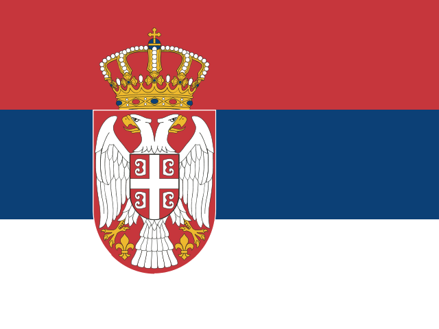

Belgium Belgium |
Ghent University |
Social and Economic Geography |
Frank Witlox |
| Belgium |
KU Leuven |
Centre for Industrial Management, Traffic and Infrastructure |
Chris Tampere |
 Switzerland Switzerland |
Ecole Polytechnique Fédérale de Lausanne |
Transportation Center |
Michel Bierlaire |
| Switzerland |
Eidgenössische Technische Hochschule Zürich |
Institute for Transport Planning and Systems |
Francesco Corman |
 Germany Germany |
Karlsruhe Institute of Technology |
Institute for Transport Studies |
Peter Vortisch |
| Germany |
Technische Universität Berlin |
Institut for Land and Sea Transport Systems |
Kai Nagel |
| Germany |
Technische Universität Dresden |
"Friedrich List" Faculty of Transport and Traffic Sciences |
Regine Gerike |
| Germany |
Technische Universität München |
Department of Mobility Systems Engineering |
Constantinos Antoniou |
 Denmark Denmark |
Danish Technical University |
Transport Science, Department of Technology, Management and Economics |
Otto Nielsen |
| Denmark |
University of Copenhagen |
Department of Economics |
Mogens Fosgerau |
 Spain Spain |
Universitat Politècnica de Catalunya |
Center for Innovation in Transportation |
Margarita Martinez Diaz |
| Spain |
Universitat Politècnica de Catalunya |
Department of Civil and Environmental Engineering |
Margarita Martinez Diaz |
| European Union |
European Commission |
Joint Research Centre |
Biagio Ciuffo |
 Finland Finland |
Aalto University |
Department of Department of Built Environment |
Shaya Vosough |
 France France |
Université Gustave Eiffel |
Laboratoire Génie des Réseaux des Transport Terrestres et Informatique Avancée |
Latifa Oukhellou |
| France |
Université Gustave Eiffel |
Laboratoire d'Ingénierie Circulation Transports |
Latifa Oukhellou |
| France |
Université Gustave Eiffel |
Laboratoire Génie des Réseaux des Transport Terrestres et Informatique Avancée |
Ludovic Leclercq |
| France |
Université Gustave Eiffel |
Laboratoire d'Ingénierie Circulation Transports |
Ludovic Leclercq |
| France |
Université de Lyon |
Laboratoire d’Economie des Transports |
Ouassim Manout |
 United Kingdom United Kingdom |
Imperial College London |
Centre for Transport Engineering and Modelling |
Dan Graham |
| United Kingdom |
University College London |
Centre for Transport Studies |
Manos Chaniotakis |
| United Kingdom |
University College London |
The Bartlett Faculty of the Built Environment |
Manos Chaniotakis |
| United Kingdom |
University College London |
Centre for Transport Studies |
Tim Hillel |
| United Kingdom |
University College London |
The Bartlett Faculty of the Built Environment |
Tim Hillel |
| United Kingdom |
University of Leeds |
Institute for Transport Studies |
David Watling |
| United Kingdom |
University of Southampton |
Transportation Research Group |
Ioannis Kaparias |
 Greece Greece |
Aristotle University of Thessaloniki |
Transport Engineering Laboratory |
Magda Pitsiava-Latinopoulou |
| Greece |
National Technical University of Athens |
Dpt of Transportation Planning and Engineering, |
George Yannis |
| Greece |
Technical University of Crete |
Dynamic Systems & Simulation Laboratory |
Ioannis Papamichail |
 Hungary Hungary |
Budapest University of Technology and Economics |
Faculty of Transportation Engineering and Vehicle Engineering |
Domokos Esztergar-Kiss |
 Israel Israel |
Israel Institute of Technology |
Dpt of Transportation and Geo-Information Engineering |
Jack Haddad |
 International partners International partners |
New-York University Abu Dhabi |
Engineering Division |
Elisabetta Cherchi |
 Italy Italy |
Sapienza Università di Roma |
Dipartimento di Ingegneria Civile, Edile e Ambientale |
Guido Gentile |
| Italy |
University of Naples "Federico II" |
Dipartimento di Ingegneria dei Trasporti |
Vincenzo Punzo |
 Luxembourg Luxembourg |
University of Luxembourg |
Transport Research Group |
Francesco Viti |
 Netherlands Netherlands |
Delft University of Technology |
Department of Engineering Systems and Services |
Shadi Sharif Azadeh |
| Netherlands |
Delft University of Technology |
Department of Maritime and Transport Technology |
Shadi Sharif Azadeh |
| Netherlands |
Delft University of Technology |
Department of Transport and Planning |
Shadi Sharif Azadeh |
| Netherlands |
Eindhoven University of Technology |
Dpt of Urban Planning and Transportation |
Melvin Wong |
| Netherlands |
Erasmus University Rotterdam |
Department of Econometrics |
Paul Bouman |
 Norway Norway |
Research Council of Norway |
The Institute of Transport Economics |
Bjorne Grimsrud |
 Poland Poland |
Jagiellonian University |
Faculty of Mathematics and Computer Science |
Rafal Kucharski |
 Portugal Portugal |
University of Coimbra |
Spatial Planning and Transportation Engineering Unit |
Antonio Pais Antunes |
 Serbia |
University of Belgrade |
Faculty of Transport and Traffic Engineering |
Nebojsa Bojovic |
 Sweden Sweden |
KTH Royal Institute of Technology |
Centre for Transport Studies |
Erik Jenelius |
| Sweden |
Linköping University |
Communications and Transport Systems |
Gunnar Floetteroed |